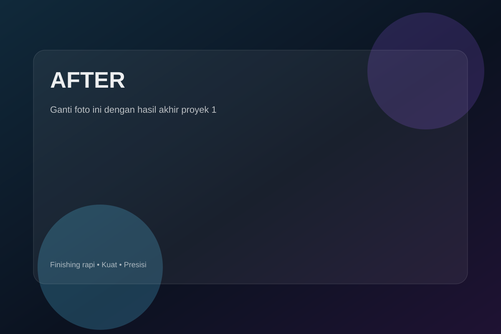
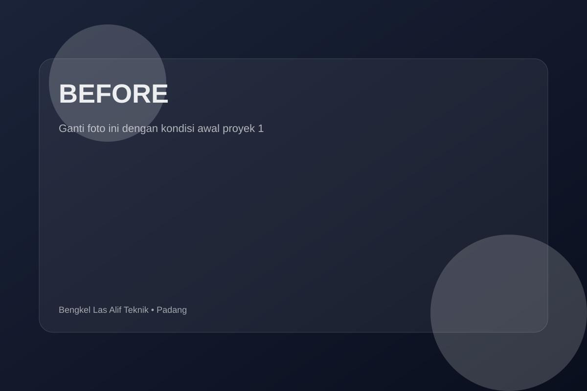
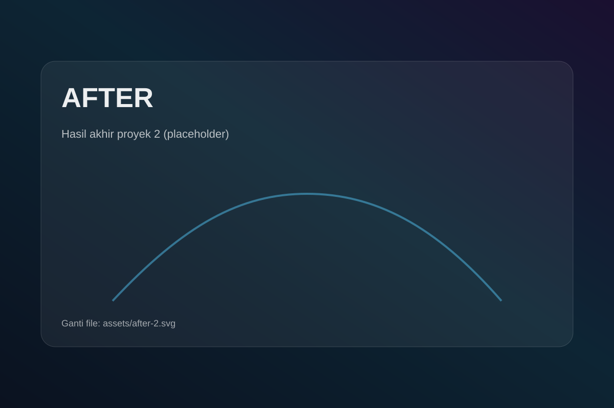
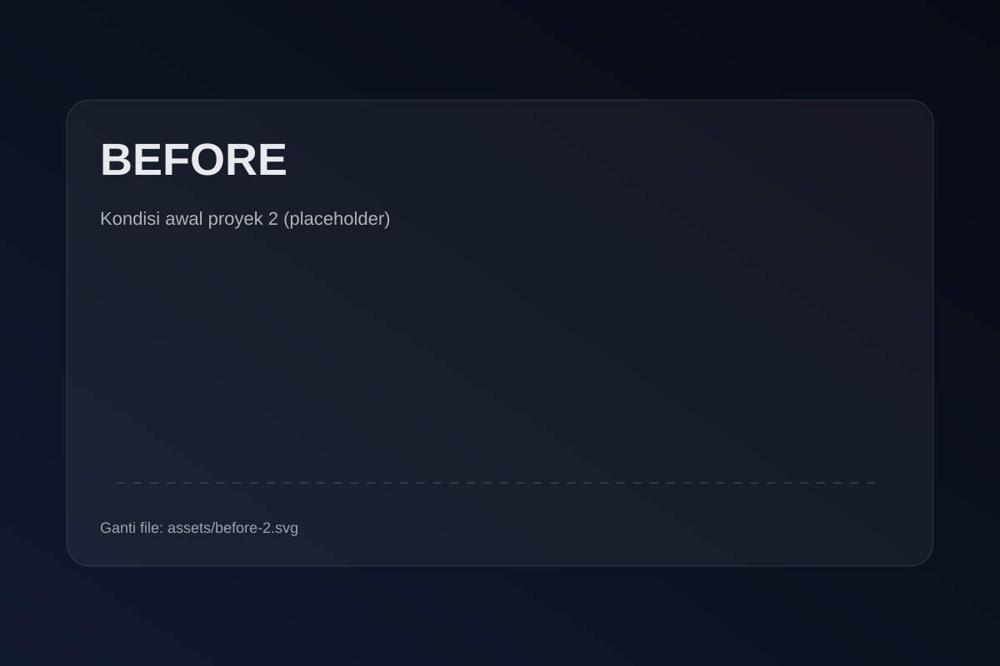

Pagar & Pintu Besi
Model minimalis sampai ornamen, bisa sliding atau swing.
Kota Padang • Kalumbuk, Kuranji
Pagar, kanopi, teralis, railing tangga, pintu besi, dan custom sesuai ukuran.
Fokus ke kualitas, kekuatan, dan tampilan yang enak dilihat.
Model minimalis sampai ornamen, bisa sliding atau swing.
Rangka kuat, rapi, dan siap untuk atap sesuai pilihan.
Aman, kokoh, dan tetap estetis untuk jendela & ventilasi.
Nyaman dipakai, presisi, dan finishing halus.
Opsi material sesuai kebutuhan: besi, hollow, stainless.
Las ulang, perkuat rangka, ganti engsel, dan penyesuaian.
Biar jelas dari awal sampai pemasangan.
Ceritakan kebutuhan, ukuran, dan referensi desain lewat WhatsApp.
Konfirmasi ukuran, material, dan detail finishing.
Pengerjaan rapi, lalu pemasangan sesuai kesepakatan.
Geser slider untuk lihat perubahan. (Ganti foto placeholder di
folder assets/.)




Klik untuk lihat detail di Instagram. (Default-nya ke profil.)
Jalan Tampat Pincuran 7 No 16, Kalumbuk, Kuranji, Kota Padang
Jalan Tampat Pincuran 7 No 16, Kalumbuk, Kuranji, Kota Padang
Tips: kirim foto/ukuran lewat WA supaya estimasi lebih cepat.
Konsultasi cepat via WhatsApp. Jelaskan ukuran + kirim foto lokasi biar enak kami bantu.